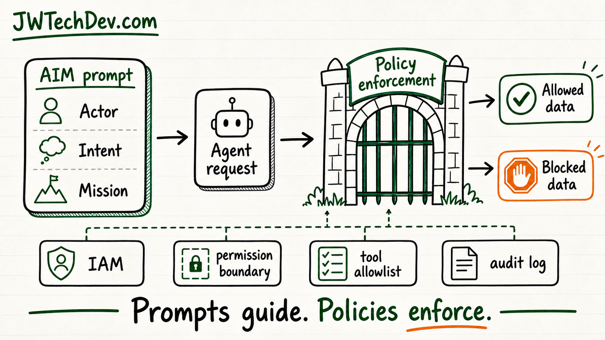

AIM prompts can guide agents, but they do not enforce permissions
This is a sharp question because it separates prompt design from real authorization.

Quick answer
AIM can help an agent understand who it is supposed to act as, what it is trying to do, and what mission it should stay focused on. But the prompt itself should not be trusted as the thing that creates backend perimeters or permissions. Prompts guide behavior. Policies enforce access.
Why this question matters
The comment is asking the right thing: if the prompt defines the actor, intent, and mission, does that become part of the permission system behind the scenes?
The answer is: it can inform the request, but it should not be the authority that grants access.
A prompt can say, 'Only pull billing docs for this customer.' A real backend still has to check which identity is making the request, which role it is using, what resource it is touching, and whether that action is allowed.
What the prompt layer can do
A good AIM-style prompt can reduce confusion. It can tell the model the role it is playing, the outcome it is pursuing, and the boundaries of the task.
That helps the agent ask for narrower data, choose safer tools, and explain why it needs access. It can also help generate a structured request that downstream systems can evaluate.
But the model is still text-generation and reasoning software. It can misunderstand instructions, be manipulated, or ask for something outside the real policy boundary.
What the enforcement layer must do
The enforcement layer is where permissions become real. In AWS terms, a request is evaluated against policy types, request context, explicit allows, implicit denies, and explicit denies.
That is the pattern AI agent systems need too. The backend should evaluate the agent request against IAM policy, permission boundaries, resource rules, tool allowlists, and approval requirements before anything sensitive is returned or changed.
If the prompt and the policy disagree, the policy should win every time.
A practical architecture model
Think about it as four layers.
Layer one is the prompt: actor, intent, mission, and task boundaries.
Layer two is the agent request: the specific tool, data, resource, or action the agent wants.
Layer three is policy enforcement: IAM, permission boundaries, allowlists, approval gates, and rate limits.
Layer four is observability: audit logs showing who asked, what was requested, what was allowed, what was blocked, and why.
What learners should study next
Learn the difference between authentication and authorization. Authentication proves who or what is making the request. Authorization decides what that identity is allowed to do.
Then learn IAM policy evaluation, explicit deny, permission boundaries, service roles, temporary credentials, resource policies, and access logs.
After that, map those concepts onto agents. Every serious agent workflow should have a named identity, a limited tool list, scoped data access, approval gates for risky actions, and logs you can actually read.
The nice answer to the comment
So the thoughtful reply is: yes, the AIM prompt can help shape the agent's intent and requested scope, but no, it should not be the thing that actually grants backend permissions.
The better system is prompt-guided and policy-enforced. That gives you the flexibility of AI without pretending the prompt is a security boundary.
Bottom line
AIM is useful because it gives the agent a clear job. IAM and policy enforcement are necessary because they decide what the agent is actually allowed to touch.
That is the bridge learners need to understand: prompt engineering can shape behavior, but security architecture has to enforce reality.
Sources checked
Want the starter kit?
Grab the free JWTechDev.com starter kit if you want a practical way to connect cloud basics, AI workflows, and approval gates.
Get resources